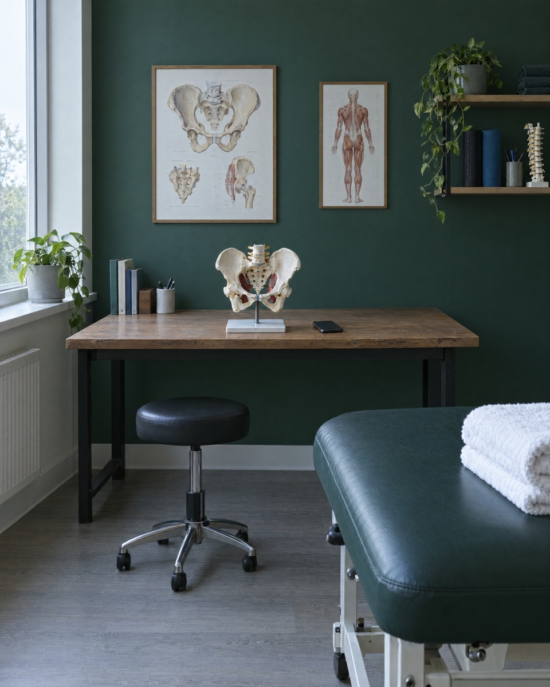

Direction A
Pelvy as a piece of health infrastructure. One owned green, one plain typeface drawn for legibility, and the count ring repeated until it means Pelvy.
Pelvy

Generated sketch, not brand photography
Rep 3 of 10
Atkinson Hyperlegible Next for everything. Your clinician's notes are here whenever you need them, in type built to be read by tired eyes.
Your clinician sets up your program.
You open Pelvy at home.
It counts you through every rep.
Signature: the count ring. It is the screen patients already know, promoted to the brand's one repeated device. Used only where the order is real.
The tradeoff: this is the least cosy of the three. It earns trust from a hospital on sight, and it leans on the writing and the photography to feel kind to someone doing a private exercise at home.